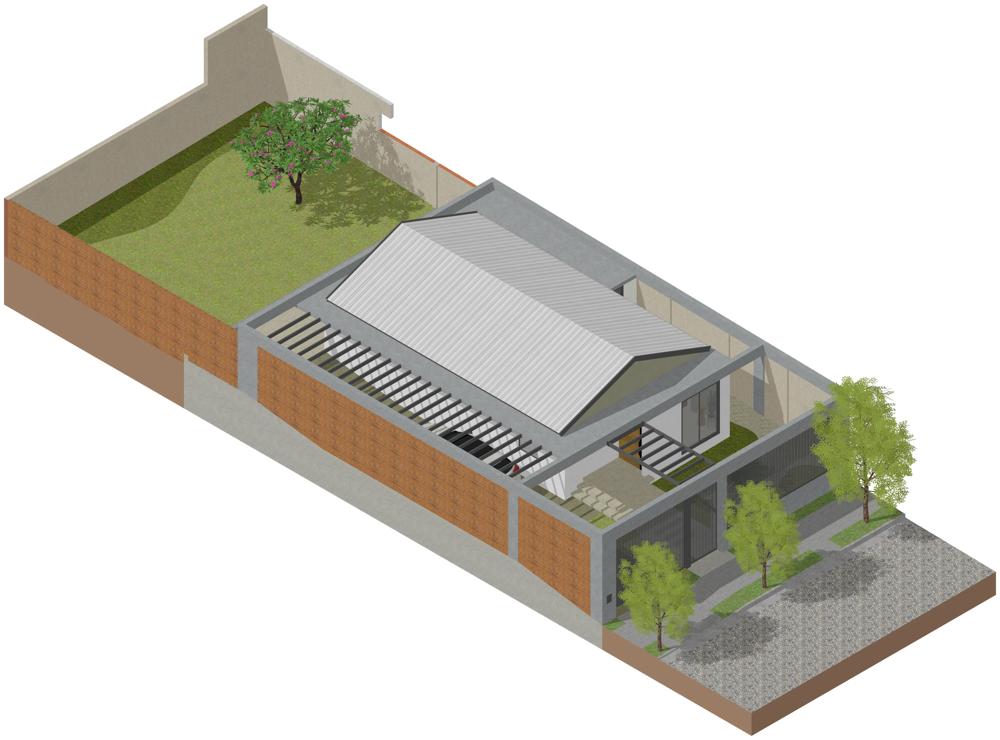

Solicitud del cliente
Barrio San Pedro, Encarnación
El proyecto busca ampliar y renovar la vivienda existente para adaptarla a las necesidades actuales de la familia y permitir que siga creciendo junto con ella. La idea es darle una imagen más minimalista y moderna, simplificando sus formas y logrando una mejor integración entre la casa actual y los nuevos espacios.
La ampliación contempla la incorporación de una habitación, una cocina y un lavadero, buscando mejorar la funcionalidad de la vivienda y hacer más cómoda la vida cotidiana. También se propone modificar el acceso para aprovechar mejor el espacio de la zona delantera, permitiendo una distribución más eficiente de los espacios exteriores.
Otro de los puntos principales del proyecto es la incorporación de un alero perimetral de hormigón que rodee la vivienda y conecte visualmente la casa con el estacionamiento. Además de unificar el conjunto, este elemento permitirá generar sombra y protección frente al sol y la lluvia, creando un corredor exterior o jere que funcione como un espacio de transición entre el interior y el exterior, pensado para circular, descansar y compartir en familia.
La intención es que la intervención no sea solamente una ampliación, sino una oportunidad para mejorar la forma de habitar la casa, aprovechando mejor los espacios y creando una arquitectura más simple, funcional y acogedora, que pueda acompañar a la familia a lo largo del tiempo.
